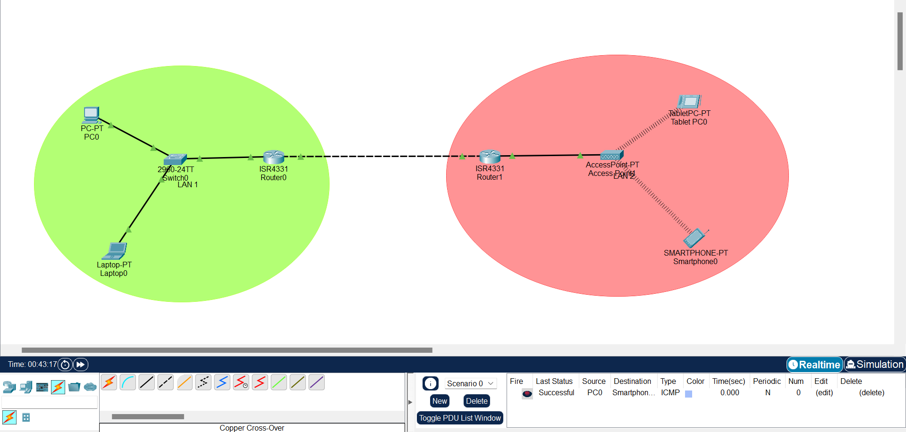

| WAN Network Configuration | |
|---|---|
| Instructor's Name: Prof. B.P. Masram | Student's Name: Ayush Chanekar |
| Objectives: To learn & understand configuring IP Addresses, related network devices & access points as well as setting up a WAN. |
Setup a WAN which contains wired as well as wireless LAN by using packet tracer tool.
Demonstrate transfer of a packet from LAN 1 (wired LAN) to LAN2 Wireless LAN.
| Characteristic | LAN | MAN | WAN |
|---|---|---|---|
| Definition | Local area network | Metropolitan area network | Wide area network |
| Coverage | Building/Campus | City/Large campus | Multiple cities/countries |
| Design and maintenance | Easy | Moderate | Difficult |
| Speed | High (100 Mbps to 10 Gbps) | Moderate to High (10 Mbps to 1 Gbps) | Variable (1 Mbps to several hundred Mbps) |
| Propagation delay | Short | Moderate | Long |
| Technology | Ethernet, Wi-Fi | Ethernet, FDDI, ATM | MPLS, Frame Relay, ATM, VSAT |
| Cost | Low | Moderate | High |
| Use Cases | Offices, Schools | Government, Universities | Internet, Corporate Networks |
| Security | Easier to secure | Moderately challenging | Most challenging |
| Fault tolerant | More tolerant | Less tolerant | Less tolerant |
| Congestion | Less | More | More |
A Wide Area Network (WAN) is a network that extends over a large geographical area, often connecting multiple Local Area Networks (LANs). WANs are essential for organizations that need to communicate across different locations, such as branch offices in different cities or countries. Unlike LANs, which are confined to a single location, WANs connect these geographically dispersed networks, enabling data sharing, communication, and resource access across vast distances.
TCP/IP is the foundational suite of protocols for communication over the Internet and most WANs. It includes several protocols like:
OSPF is a link-state routing protocol used within an Autonomous System (AS). It operates within a single administrative domain and uses Dijkstra's algorithm to find the shortest path for data transmission.
BGP is a path-vector protocol used to manage routing between different ASes on the Internet. It is critical for WANs that span across different networks and need efficient, scalable routing.
Frame Relay is a packet-switched WAN protocol that operates at the data link layer. It is used for connecting local area networks (LANs) and transferring data between WAN endpoints using virtual circuits.
MPLS is a method of ensuring efficient data packet forwarding in a WAN. It operates between the data link layer and network layer and is known for improving the speed and efficiency of routing.
PPP is a data link layer protocol used to establish a direct connection between two network nodes. It is commonly used for internet connections over serial links and supports authentication, encryption, and compression.
SONET is a standard for transmitting digital data over optical fiber. It is widely used in WANs due to its high-speed capabilities and ability to multiplex multiple streams of data onto a single optical fiber.
ATM is a cell-based switching technique that uses fixed-size packets, called cells, to transmit data across a network. It is used in WANs for high-speed data transfer and can handle real-time traffic like voice and video.
IPsec is a protocol suite for securing IP communications by authenticating and encrypting each IP packet in a communication session. It is widely used in VPNs for securing data transfer over WANs.
DHCP is a network management protocol used to automatically assign IP addresses and other network configuration parameters to devices on a network, making it easier to manage and configure devices in a WAN.
SNMP is a protocol used for managing devices on IP networks. It is widely used in WANs to monitor and manage network devices like routers, switches, and servers.
FTP is a standard network protocol used for transferring files from one host to another over a TCP-based network like the Internet. It is commonly used in WANs for the reliable transfer of large files.
HTTP is the foundation of data communication for the web. HTTPS is the secure version of HTTP, using encryption to protect data in transit, which is crucial in WAN environments.
VoIP is a protocol used for delivering voice communications and multimedia sessions over IP networks, including the Internet and WANs. It is essential for integrating voice services into WANs.
VPN protocols like PPTP, L2TP, and SSL/TLS are used to create secure connections over a WAN. They encrypt data and ensure privacy and security for users accessing a WAN remotely.
Routers operating at Layer 3 of the OSI model (the Network layer) are key components in WAN configurations.
These routers handle the task of forwarding data packets between different networks by analyzing the destination IP addresses. By using routing tables, a Layer 3 router determines the most efficient path to send packets to their intended destination across the WAN.
This routing capability is crucial for managing traffic between distant networks and ensuring that data reaches its endpoint efficiently.
IP addressing is a fundamental aspect of configuring WANs. Each interface on a router must be assigned a unique IP address to facilitate communication across the network. WAN configurations often involve the use of both public and private IP addresses.
Public IP addresses are typically used on the WAN side to connect to the broader internet, while private IP addresses are used within the internal LANs. Subnetting may be employed to optimize IP address allocation and enhance network organization.
WAN links are the connections between routers in a WAN, and they can be physical or logical. These links are established using various technologies, including leased lines, MPLS (Multiprotocol Label Switching), VPNs (Virtual Private Networks), or internet-based connections.
Configuring WAN links involves setting up the interfaces on each router, assigning IP addresses, and enabling the necessary protocols to ensure reliable data transmission between remote sites.
Routing protocols are essential in WAN configurations, as they determine how routers communicate with each other to discover and maintain routes.
These protocols ensure that data is forwarded through the most efficient paths across the WAN. Several routing protocols can be used in WAN setups, each with its unique characteristics:

Successful LAN Configuration:
Router Configuration:
Packet Transmission within LAN:
Packet Transmission across LANs:
Understanding of LAN and WAN Setup:
Proficiency in Router Configuration:
Troubleshooting and Optimization:
packet tracer tool.